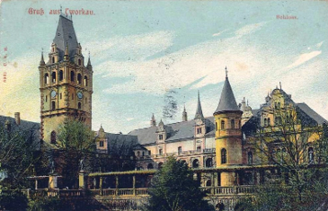
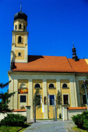
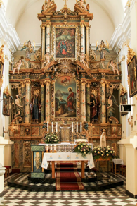

Pałac prawdopodobnie został wybudowany w okolicach 1565. Przez kolejne
300 lat miał wielu właścicieli, którzy znacznie rozbudowali i
zmodernizoawali zamek. W 1931 w pałacu wybuchł pożar obejmujący całą
budowlę, a w 1945r kolejny, który zniszczył budowlę w 90%. Dzis możemy
wejść do starej wozowni i obejrzeć panoramę Tworkowa z wieży widokowej.

Kościół
Kościół parafialny świętych Piotra i Pawła, wzniesiony w miejsce
spłoniętego. W 1738 roku kościół otrzymał bogaty, barokowy wystrój
wnętrza.


Młyn
Został wybudowany w 1914r. Młyn był napędzany turbiną wodną, od 1927r. –
silnikiem spalinowym, a w póżniejszych latach napędem elektrycznym.
Zakończył swoją działalność w 2018 roku. Dziś można go zwiedzać pod
nadzorem właściciela.